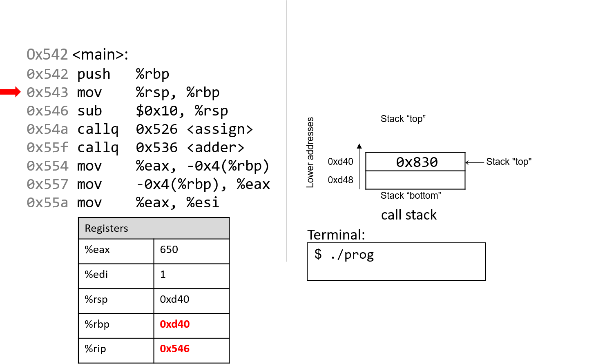
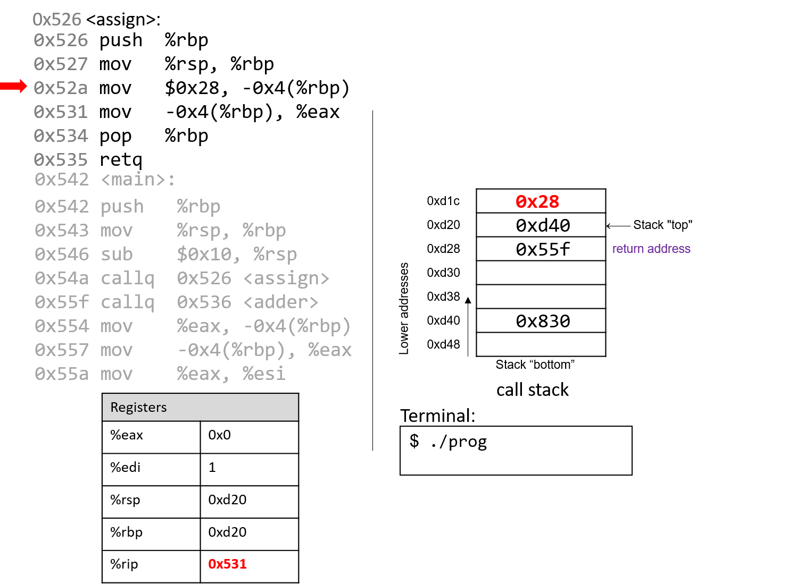
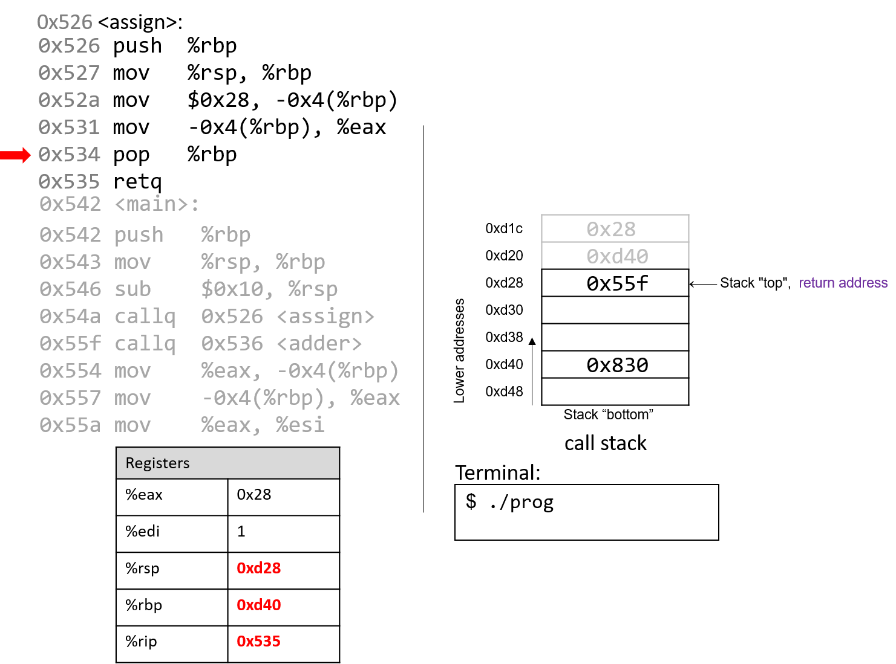
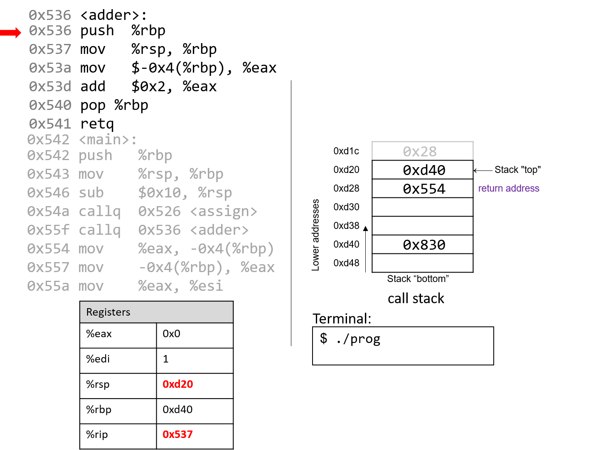
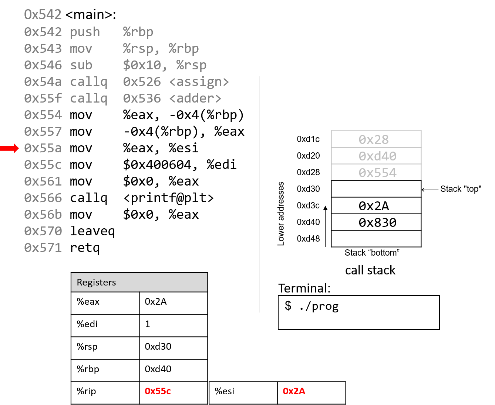
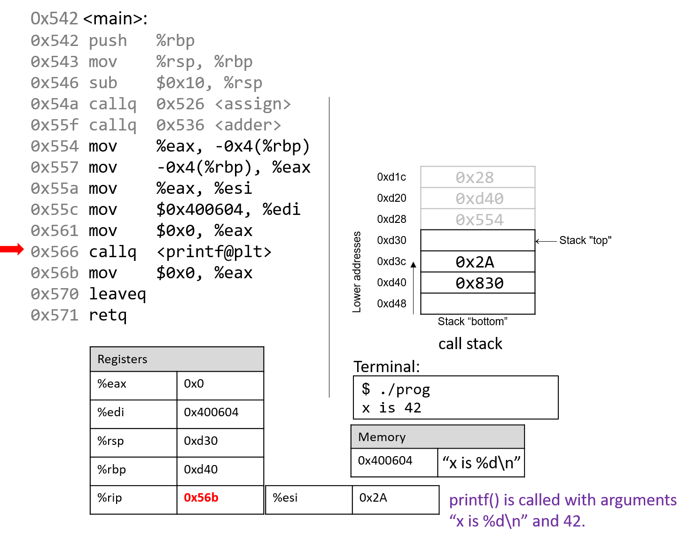

7.5. Functions in Assembly
Trong phần trước, chúng ta đã lần theo các hàm đơn giản trong assembly.
Trong phần này, chúng ta sẽ thảo luận về sự tương tác giữa nhiều hàm trong assembly trong bối cảnh của một chương trình lớn hơn. Chúng ta cũng sẽ giới thiệu một số lệnh mới liên quan đến việc quản lý hàm.
Hãy bắt đầu bằng việc ôn lại cách call stack được quản lý. Hãy nhớ rằng %rsp là stack pointer và luôn trỏ tới đỉnh của stack. Thanh ghi %rbp đại diện cho base pointer (còn gọi là frame pointer) và trỏ tới đáy của stack frame hiện tại. Stack frame (còn gọi là activation frame hoặc activation record) là phần của stack được cấp phát cho một lần gọi hàm. Hàm đang thực thi luôn nằm ở đỉnh stack, và stack frame của nó được gọi là active frame. Active frame được giới hạn bởi stack pointer (ở đỉnh stack) và frame pointer (ở đáy frame). Activation record thường chứa các biến cục bộ của hàm.
Hình 1 minh họa các stack frame của main và một hàm mà nó gọi tên là fname. Chúng ta sẽ gọi hàm main là hàm caller và fname là hàm callee.

Hình 1. Quản lý stack frame
Trong Hình 1, active frame hiện tại thuộc về hàm callee (fname). Vùng nhớ giữa stack pointer và frame pointer được dùng cho các biến cục bộ. Stack pointer thay đổi khi các giá trị cục bộ được push và pop khỏi stack. Ngược lại, frame pointer hầu như không thay đổi, luôn trỏ tới phần bắt đầu (đáy) của stack frame hiện tại. Vì vậy, các compiler như GCC thường tham chiếu các giá trị trên stack tương đối so với frame pointer. Trong Hình 1, active frame được giới hạn phía dưới bởi base pointer của fname, là địa chỉ stack 0x418. Giá trị lưu tại địa chỉ 0x418 là giá trị %rbp đã “lưu” (0x42c), bản thân nó là một địa chỉ cho biết đáy của activation frame của hàm main. Đỉnh của activation frame của main được giới hạn bởi return address, cho biết vị trí trong hàm main mà chương trình sẽ tiếp tục thực thi khi hàm callee fname kết thúc.
Return address trỏ tới bộ nhớ của code segment, không phải stack memory.
Hãy nhớ rằng vùng call stack (stack memory) của một chương trình khác với vùng code (code segment memory). Trong khi%rbpvà%rsptrỏ tới địa chỉ trong stack memory,%riptrỏ tới một địa chỉ trong code segment memory. Nói cách khác, return address là một địa chỉ trong code segment memory, không phải stack memory:
Hình 2. Các phần của không gian địa chỉ của một chương trình

Bảng 1. Một số lệnh quản lý hàm thông dụng
| Instruction | Translation |
|---|---|
leaveq | Chuẩn bị stack để thoát khỏi hàm. Tương đương với:mov %rbp, %rsppop %rbp |
callq addr <fname> | Chuyển active frame sang hàm callee. Tương đương với:push %ripmov addr, %rip |
retq | Khôi phục active frame về hàm caller. Tương đương với:pop %rip |
Ví dụ, lệnh leaveq là một dạng viết tắt mà compiler dùng để khôi phục stack pointer và frame pointer khi chuẩn bị thoát khỏi hàm. Khi hàm callee kết thúc, leaveq đảm bảo frame pointer được khôi phục về giá trị trước đó.
Các lệnh callq và retq đóng vai trò quan trọng trong quá trình một hàm gọi hàm khác. Cả hai lệnh này đều thay đổi instruction pointer (%rip). Khi hàm caller thực thi lệnh callq, giá trị hiện tại của %rip sẽ được lưu trên stack để làm return address — tức địa chỉ trong chương trình mà caller sẽ tiếp tục thực thi khi callee kết thúc. Lệnh callq cũng thay thế giá trị %rip bằng địa chỉ của hàm callee.
Lệnh retq khôi phục giá trị %rip từ giá trị đã lưu trên stack, đảm bảo chương trình tiếp tục thực thi tại địa chỉ được chỉ định trong hàm caller. Bất kỳ giá trị trả về nào của callee sẽ được lưu trong %rax hoặc một trong các component register của nó (ví dụ %eax). Lệnh retq thường là lệnh cuối cùng được thực thi trong bất kỳ hàm nào.
7.5.1. Function Parameters
Không giống IA32, các tham số của hàm trong x86-64 thường được nạp sẵn vào các thanh ghi trước khi gọi hàm. Bảng 2 liệt kê các tham số của hàm và thanh ghi (nếu có) mà chúng được nạp vào trước khi gọi hàm.
Bảng 2. Vị trí lưu trữ tham số hàm
| Parameter | Location |
|---|---|
| Parameter 1 | %rdi |
| Parameter 2 | %rsi |
| Parameter 3 | %rdx |
| Parameter 4 | %rcx |
| Parameter 5 | %r8 |
| Parameter 6 | %r9 |
| Parameter 7+ | trên call stack |
Sáu tham số đầu tiên của hàm lần lượt được nạp vào các thanh ghi %rdi, %rsi, %rdx, %rcx, %r8, và %r9. Bất kỳ tham số bổ sung nào sẽ được nạp lần lượt vào call stack dựa trên kích thước của chúng (dịch 4 byte cho dữ liệu 32-bit, dịch 8 byte cho dữ liệu 64-bit).
7.5.2. Tracing Through an Example
Dựa trên kiến thức về quản lý hàm, hãy lần theo ví dụ mã nguồn đã được giới thiệu ở đầu chương này. Lưu ý rằng từ khóa void được thêm vào danh sách tham số của mỗi định nghĩa hàm để chỉ rõ rằng các hàm này không nhận đối số nào. Thay đổi này không làm thay đổi kết quả của chương trình; tuy nhiên, nó giúp đơn giản hóa code assembly tương ứng.
#include <stdio.h>
int assign(void) {
int y = 40;
return y;
}
int adder(void) {
int a;
return a + 2;
}
int main(void) {
int x;
assign();
x = adder();
printf("x is: %d\n", x);
return 0;
}
Chúng ta biên dịch đoạn code này với lệnh:
gcc -o prog prog.c
và sử dụng:
objdump -d
để xem code assembly bên dưới. Lệnh thứ hai sẽ xuất ra một tệp khá lớn chứa nhiều thông tin không cần thiết. Hãy dùng less và chức năng tìm kiếm để trích xuất các hàm adder, assign và main:
0000000000400526 <assign>:
400526: 55 push %rbp
400527: 48 89 e5 mov %rsp,%rbp
40052a: c7 45 fc 28 00 00 00 movl $0x28,-0x4(%rbp)
400531: 8b 45 fc mov -0x4(%rbp),%eax
400534: 5d pop %rbp
400535: c3 retq
0000000000400536 <adder>:
400536: 55 push %rbp
400537: 48 89 e5 mov %rsp,%rbp
40053a: 8b 45 fc mov -0x4(%rbp),%eax
40053d: 83 c0 02 add $0x2,%eax
400540: 5d pop %rbp
400541: c3 retq
0000000000400542 <main>:
400542: 55 push %rbp
400543: 48 89 e5 mov %rsp,%rbp
400546: 48 83 ec 10 sub $0x10,%rsp
40054a: e8 e3 ff ff ff callq 400526 <assign>
40054f: e8 d2 ff ff ff callq 400536 <adder>
400554: 89 45 fc mov %eax,-0x4(%rbp)
400557: 8b 45 fc mov -0x4(%rbp),%eax
40055a: 89 c6 mov %eax,%esi
40055c: bf 04 06 40 00 mov $0x400604,%edi
400561: b8 00 00 00 00 mov $0x0,%eax
400566: e8 95 fe ff ff callq 400400 <printf@plt>
40056b: b8 00 00 00 00 mov $0x0,%eax
400570: c9 leaveq
400571: c3 retq
Mỗi hàm bắt đầu bằng một symbolic label (nhãn ký hiệu) tương ứng với tên được khai báo của nó trong chương trình. Ví dụ, <main>: là symbolic label cho hàm main. Địa chỉ của một nhãn hàm cũng chính là địa chỉ của lệnh đầu tiên trong hàm đó. Để tiết kiệm không gian trong các hình minh họa bên dưới, chúng ta rút gọn địa chỉ xuống 12 bit thấp. Vì vậy, địa chỉ chương trình 0x400542 sẽ được hiển thị thành 0x542.
7.5.3. Tracing Through main
Hình 3 cho thấy execution stack ngay trước khi thực thi main.

Hình 3. Trạng thái ban đầu của các thanh ghi CPU và call stack trước khi thực thi hàm main
Hãy nhớ rằng stack phát triển về phía các địa chỉ thấp hơn. Trong ví dụ này, %rbp ban đầu là địa chỉ stack 0x830, và %rsp ban đầu là địa chỉ stack 0xd48. Cả hai giá trị này được giả định cho ví dụ.
Vì các hàm trong ví dụ trước sử dụng dữ liệu kiểu số nguyên, chúng ta làm nổi bật các component register %eax và %edi, vốn ban đầu chứa giá trị rác. Mũi tên đỏ (góc trên bên trái) biểu thị lệnh đang được thực thi. Ban đầu, %rip chứa địa chỉ 0x542, là địa chỉ trong bộ nhớ chương trình của dòng đầu tiên trong hàm main.

Lệnh đầu tiên lưu giá trị hiện tại của %rbp bằng cách push 0x830 lên stack. Vì stack phát triển về phía địa chỉ thấp hơn, stack pointer %rsp được cập nhật thành 0xd40, tức nhỏ hơn 0xd48 8 byte. %rip tăng tới lệnh tiếp theo.

Lệnh tiếp theo (mov %rsp, %rbp) cập nhật giá trị %rbp thành bằng %rsp. Frame pointer (%rbp) giờ trỏ tới đầu stack frame của hàm main. %rip tăng tới lệnh tiếp theo.

Lệnh sub trừ 0x10 khỏi địa chỉ của stack pointer, về cơ bản làm stack “mở rộng” thêm 16 byte, được biểu diễn bằng hai ô nhớ 8 byte trên stack. %rsp giờ có giá trị mới là 0xd30. %rip tăng tới lệnh tiếp theo.

Lệnh callq <assign> push giá trị trong %rip (địa chỉ của lệnh tiếp theo sẽ thực thi) lên stack. Vì lệnh tiếp theo sau callq <assign> có địa chỉ 0x55f, giá trị này được push lên stack làm return address. Hãy nhớ rằng return address cho biết địa chỉ chương trình sẽ tiếp tục thực thi khi quay lại main.
Tiếp đó, lệnh callq đưa địa chỉ của hàm assign (0x526) vào %rip, báo hiệu chương trình sẽ tiếp tục thực thi trong hàm callee assign thay vì lệnh tiếp theo trong main.

Hai lệnh đầu tiên trong hàm assign là phần “dọn dẹp sổ sách” (book-keeping) mà mọi hàm đều thực hiện. Lệnh đầu tiên push giá trị trong %rbp (địa chỉ 0xd40) lên stack. Hãy nhớ rằng địa chỉ này trỏ tới đầu stack frame của main. %rip tăng tới lệnh thứ hai trong assign.

Lệnh tiếp theo (mov %rsp, %rbp) cập nhật %rbp để trỏ tới đỉnh stack, đánh dấu đầu stack frame của assign. %rip tăng tới lệnh tiếp theo trong assign.

Lệnh mov tại địa chỉ 0x52a đưa giá trị $0x28 (tức 40) vào stack tại địa chỉ -0x4(%rbp), tức 4 byte phía trên frame pointer. Frame pointer thường được dùng để tham chiếu các vị trí trên stack. Lưu ý rằng thao tác này không thay đổi %rsp — stack pointer vẫn trỏ tới 0xd20. %rip tăng tới lệnh tiếp theo trong assign.

Lệnh mov tại địa chỉ 0x531 đưa giá trị $0x28 vào %eax, thanh ghi chứa giá trị trả về của hàm. %rip tăng tới lệnh pop trong assign.

Lúc này, hàm assign gần như đã hoàn tất. Lệnh tiếp theo là pop %rbp, khôi phục %rbp về giá trị trước đó (0xd40). Vì pop thay đổi stack pointer, %rsp được cập nhật thành 0xd28.

Lệnh cuối cùng trong assign là retq. Khi retq thực thi, return address được pop khỏi stack vào %rip. Trong ví dụ này, %rip giờ trỏ tới lệnh callq trong main tại địa chỉ 0x55f.
Một số điểm quan trọng cần lưu ý:
- Stack pointer và frame pointer đã được khôi phục về giá trị trước khi gọi
assign, cho thấy stack frame củamainlại trở thành active frame. - Các giá trị cũ trên stack từ stack frame trước không bị xóa. Chúng vẫn tồn tại trên call stack.

Quay lại main, lệnh gọi adder ghi đè return address cũ trên stack bằng return address mới (0x554). Return address này trỏ tới lệnh sẽ thực thi sau khi adder trả về, tức mov %eax, -0x4(%rbp). %rip được cập nhật trỏ tới lệnh đầu tiên trong adder tại địa chỉ 0x536.

Lệnh đầu tiên trong adder lưu frame pointer của caller (%rbp của main) lên stack.

Lệnh tiếp theo cập nhật %rbp bằng giá trị hiện tại của %rsp (0xd20). Hai lệnh này thiết lập đầu stack frame cho adder.

Hãy chú ý tới lệnh tiếp theo. Hãy nhớ rằng $0x28 đã được đặt trên stack khi gọi assign. Lệnh mov $-0x4(%rbp), %eax di chuyển giá trị cũ trên stack vào %eax! Điều này sẽ không xảy ra nếu lập trình viên đã khởi tạo biến a trong adder.

Lệnh add tại địa chỉ 0x53d cộng 2 vào %eax. Hãy nhớ rằng khi trả về một số nguyên 32-bit, x86-64 sử dụng %eax thay vì %rax. Hai lệnh cuối này tương đương với đoạn code trong adder:
int a;
return a + 2;

Sau khi pop thực thi, frame pointer lại trỏ tới đầu stack frame của main (0xd40). Stack pointer lúc này chứa địa chỉ 0xd28.

Việc thực thi lệnh retq sẽ pop địa chỉ trả về (return address) ra khỏi stack, khôi phục instruction pointer về 0x554, tức địa chỉ của lệnh tiếp theo sẽ được thực thi trong main. Địa chỉ chứa trong %rsp lúc này là 0xd30.

Quay lại main, lệnh mov %eax, -0x4(%rbp) đặt giá trị trong %eax vào vị trí bộ nhớ cách %rbp 4 byte, tức địa chỉ 0xd3c. Lệnh tiếp theo lại đưa giá trị này trở lại vào thanh ghi %eax.

Bỏ qua một vài bước, lệnh mov tại địa chỉ 0x55a sao chép giá trị trong %eax (tức 0x2A) vào thanh ghi %esi, là component register 32-bit của %rsi và thường lưu tham số thứ hai của một hàm.

Lệnh tiếp theo (mov $0x400604, %edi) sao chép một giá trị hằng (một địa chỉ trong code segment memory) vào thanh ghi %edi. Hãy nhớ rằng %edi là component register 32-bit của %rdi, thường lưu tham số thứ nhất của một hàm. Địa chỉ 0x400604 trong code segment là địa chỉ bắt đầu của chuỗi "x is %d\n".

Lệnh tiếp theo đặt lại giá trị của %eax thành 0. Instruction pointer lúc này trỏ tới lời gọi hàm printf (được ký hiệu là <printf@plt>).

Lệnh tiếp theo gọi hàm printf. Để ngắn gọn, chúng ta sẽ không lần theo chi tiết hàm printf (thuộc stdio.h). Tuy nhiên, theo trang hướng dẫn (man -s3 printf), printf có dạng:
int printf(const char * format, ...)
Nói cách khác, tham số đầu tiên là con trỏ tới chuỗi định dạng, và các tham số tiếp theo là các giá trị sẽ được chèn vào định dạng đó. Các lệnh từ địa chỉ 0x55a đến 0x566 tương ứng với dòng lệnh trong hàm main:
printf("x is %d\n", x);
Khi hàm printf được gọi:
- Một return address chỉ lệnh sẽ thực thi sau khi
printfkết thúc được push lên stack. - Giá trị của
%rbpđược push lên stack, và%rbpđược cập nhật để trỏ tới đỉnh stack, đánh dấu bắt đầu stack frame củaprintf.
Tại một thời điểm nào đó, printf sẽ tham chiếu tới các đối số của nó: chuỗi "x is %d\n" và giá trị 0x2A. Tham số thứ nhất được lưu trong %edi, tham số thứ hai được lưu trong %esi. Return address nằm ngay bên dưới %rbp tại vị trí %rbp+8.
Với bất kỳ hàm nào có n tham số, GCC sẽ đặt 6 tham số đầu tiên vào các thanh ghi (như trong Bảng 2), và các tham số còn lại sẽ được đặt trên stack bên dưới return address.
Sau khi gọi printf, giá trị 0x2A sẽ được in ra cho người dùng ở dạng số nguyên. Do đó, giá trị 42 được in ra màn hình.

Sau khi gọi printf, một vài lệnh cuối sẽ dọn dẹp stack và chuẩn bị thoát sạch sẽ khỏi hàm main. Đầu tiên, lệnh mov tại địa chỉ 0x56b đảm bảo rằng giá trị 0 nằm trong thanh ghi trả về (vì việc cuối cùng main làm là return 0).

Lệnh leaveq chuẩn bị stack để trả về từ lời gọi hàm. Hãy nhớ rằng leaveq tương đương với cặp lệnh:
mov %rbp, %rsp
pop %rbp
Nói cách khác, CPU ghi đè stack pointer bằng frame pointer. Trong ví dụ này, stack pointer được cập nhật từ 0xd30 thành 0xd40. Tiếp đó, CPU thực thi pop %rbp, lấy giá trị tại 0xd40 (trong ví dụ này là địa chỉ 0x830) và đặt vào %rbp. Sau khi leaveq thực thi, stack pointer và frame pointer trở lại giá trị ban đầu trước khi main chạy.
Lệnh cuối cùng được thực thi là retq. Với giá trị 0x0 trong thanh ghi trả về %eax, chương trình trả về 0, báo hiệu kết thúc thành công.
Nếu bạn đã đọc kỹ phần này, bạn sẽ hiểu vì sao chương trình in ra giá trị 42. Về bản chất, chương trình đã vô tình sử dụng các giá trị cũ trên stack, khiến nó hoạt động theo cách mà ta không ngờ tới. Ví dụ này khá vô hại; tuy nhiên, ở các phần sau, chúng ta sẽ thảo luận cách tin tặc lợi dụng lời gọi hàm để khiến chương trình hoạt động sai lệch theo những cách thực sự nguy hiểm.